Serveur Zabbix
Objectif et environnement
Objectif
L’installation et configuration d’un serveur Zabbix
Environnement
Matériels :
Dell PowerEdge r240 avec Proxmox 7.1-7
Adressage des VMS :
Réseaux : 172.16.0.0/16
Serveur FreePBX : SRV-UBU-ZBX 172.28.1.210/16
Documentation :
Processus
Installation de Zabbix
Nous avons créé une VM avec l’ISO de Zabbix 6.0 LTS puis lancé l’installation
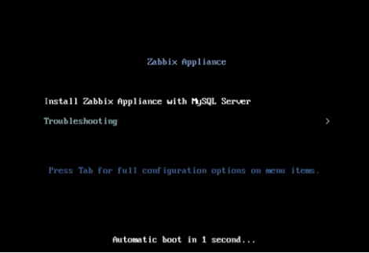
L’installation se déroule automatiquement
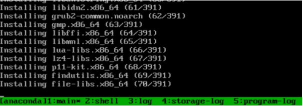
Une fois l’installation est terminée, nous pouvons accéder à Zabbix via le navigateur web :
Utilisateur par défaut : Admin
Mot de passe par défaut : zabbix
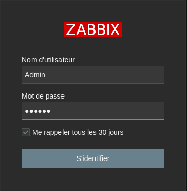
Ajouter un Host
Dans la barre latérale Configuration > Hôtes
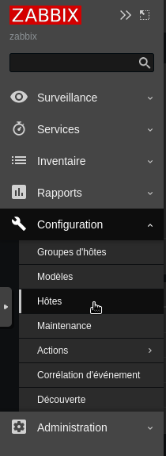
Créer un hôte
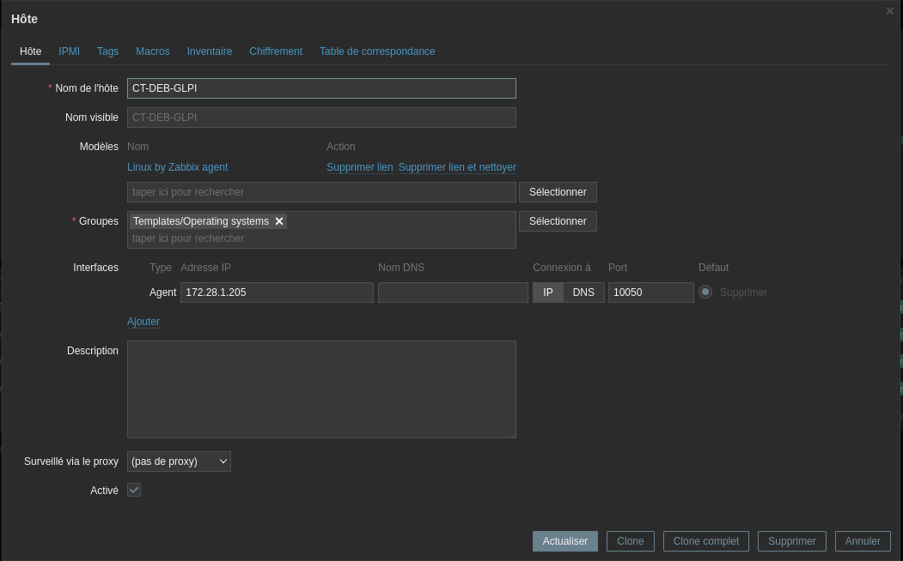
L’installation de l’agent Zabbix sous Linux
J’ai téléchargé la package zabbix correspondant à la VM depuis le site officiel :
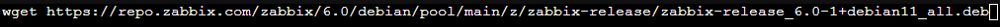
Installation du package et démarrage du service
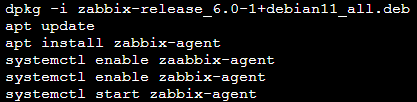
Modification du fichier de configuration :
nano /etc/zabbix/zabbix_agentd.conf
Server doit correspond à l’adresse ip du serveur zabbix.
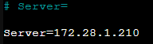
Puis j’ai redémarré le service
systemctl restart zabbix-agent
Le serveur GLPI a correctement monté :
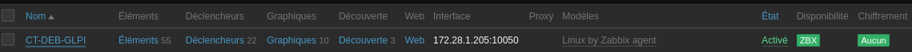
J’ai effectué les mêmes manipulations pour tous les serveurs de type linux.
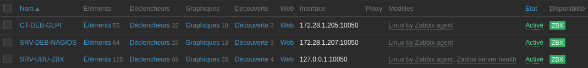
L’installation de l’agent Zabbix sous Windows
J’ai téléchargé l’agent sur le site officiel correspondant à Windows:
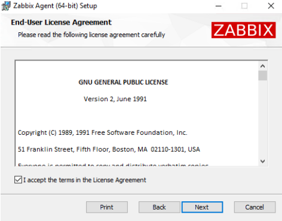
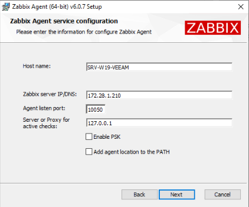
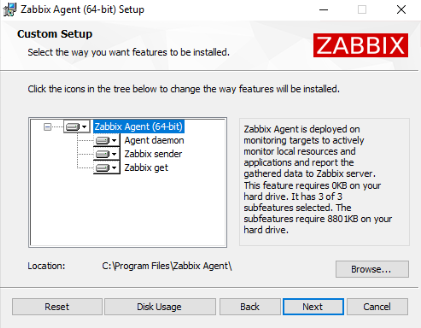
Menu Configuration > Hôte > Ajouter
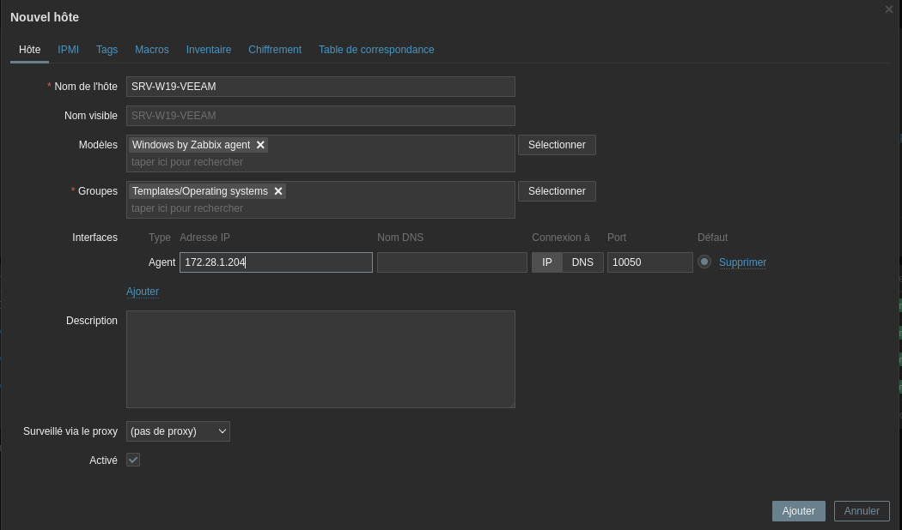
Environ 60s plus tard le serveur ajouté devient disponible
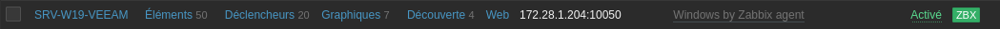
Le tableau de bord
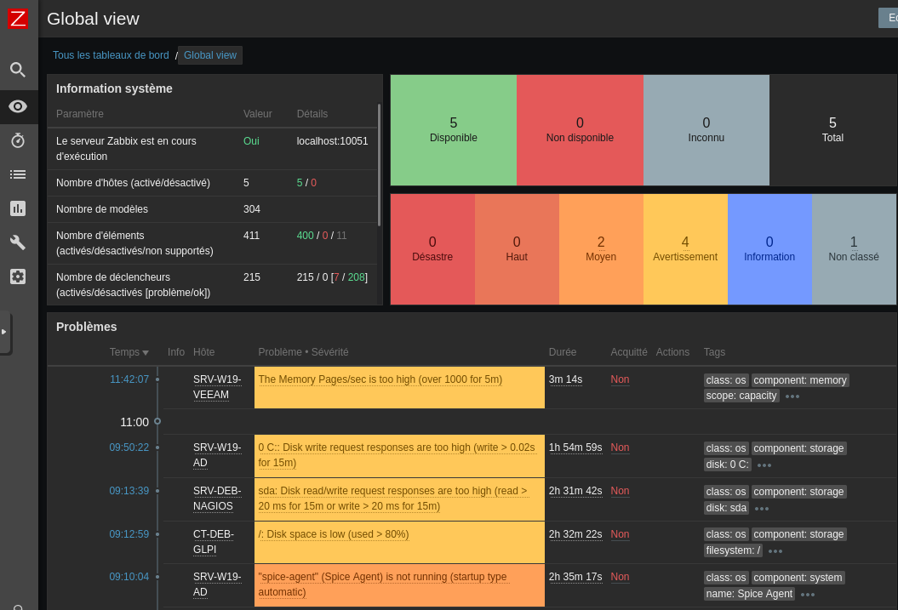
Les serveurs surveillés
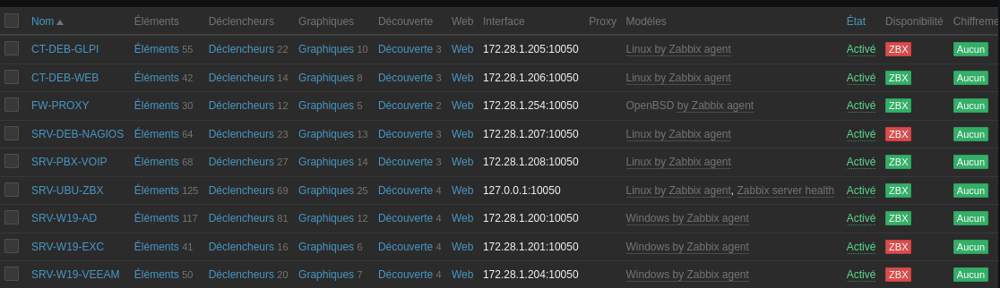
Intégrer Zabbix dans Active Directory

NB : le procédé d’intégration est expliqué dans le chapitre Active Directory.
Conclusion
La configuration du serveur Zabbix avec le déploiement des agents est terminée.